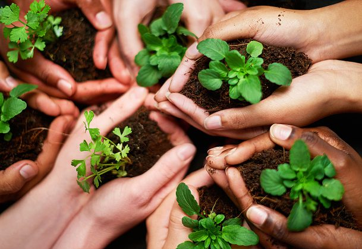

Екологічний Спосіб життя
 Природні ресурси виснажуються, і сучасній людині важливо задуматися, в якому вигляді дістанеться планета нашим нащадкам. Поки не пізно, варто переглянути свій спосіб життя і зробити його більш екологічним і безпечним для природи. Яким буде наш спільний дім завтра - відповідальність кожного з нас. Важливо навчитися бути відповідальним громадянином з дбайливим ставленням до навколишнього середовища. Більшість людей впевнені, що почати вести екологічний спосіб життя складно, дорого і енергозатратно.
Насправді це не так, все дуже просто, якщо виконувати декілька простих правил:
1. Розділяй сміття
Роздільний збір сміття необхідний, щоб не створювати величезні звалища, які будуть розкладати сотню років. Сортування дозволить відправити сміття на переробку і використовувати сировину вдруге. Найголовніше в роздільному зборі відходів - відокремити харчові відходи від вторинної сировини. Папір - окремо, батарейки, скло та інші відходи - окремо. Роздільний збір сміття дозволяє економити природні ресурси і зберегти їх для майбутніх поколінь.
2. Здавай відходи на переробку
Не менше 50% звичайного сміттєвого відра жителя України становить вторсировина, тобто матеріали, які можуть бути перероблені. На ділі, в Україні на сьогоднішній день переробляється приблизно 10% побутових відходів. Збільшення цього числа безпосередньо залежить від розвитку інфраструктури для роздільного збору відходів.
3. Заміни одноразові речі на багаторазові
Сьогодні для нас одноразові пластикові пакети, стаканчики, запальнички, памперси, вологі серветки і багато іншого настільки звичні речі, що складно уявити собі, як люди обходилися без усього цього. Секрет в тому, що вони без цього ніяк не обходилися, тому що всі ті ж речі були багаторазовими. Та й сьогодні будь-який одноразової речі, яку ми використовуємо в побуті, є багаторазова альтернатива.
4. Заощаджуй воду
До середини 21 століття проблема нестачі прісної води може стати однією з найважливіших. За даними експертів, людині щодня необхожімо не менше 20 літрів води. Але, цю цифру можна і потрібно зменшити. Економія в побуті може зберегти тисячі літрів води.

Відповідальне споживання
Як стати відповідальним споживачем та зробити життя навколо себе екологічнішим?
Базові принципи та звички.
Сортування сміття
Інструкція як почати сортувати сміття та на що важливо звертати увагу.
Види і типи пластику.
Економія електроенергії
Які електричні прилади у вашому домі вітрачають забагато енергії?
Та що з цим можна зробити?